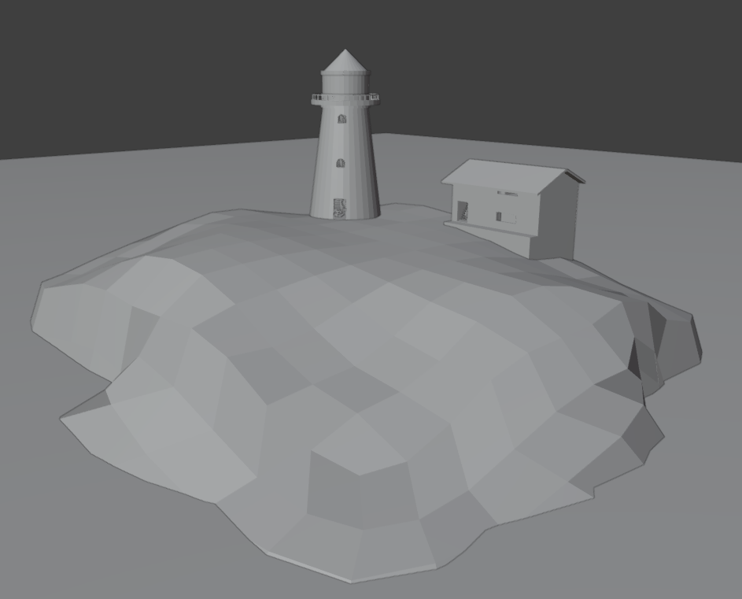
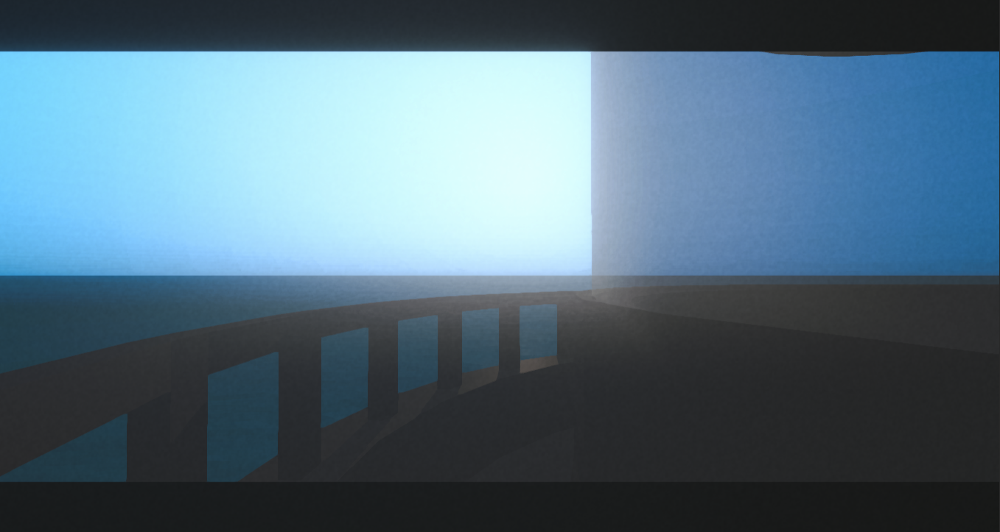
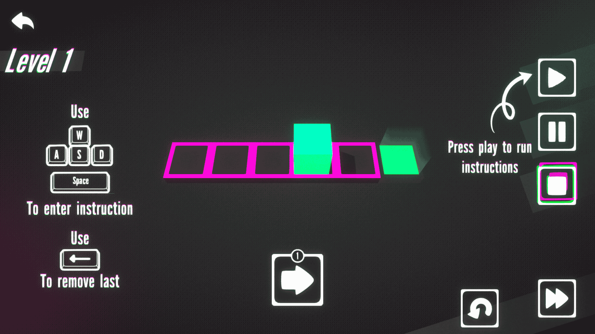
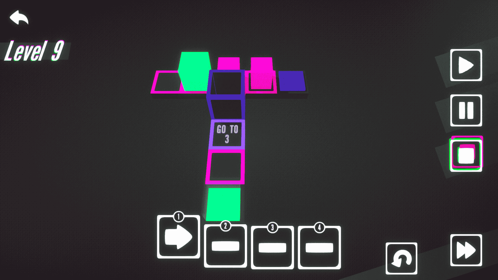

I Joined The GMTK Jam... Again!
Hello!
2 years ago around this time, I've made my first game as an indie game developer, "You Are The AI Now", for the GMTK Game Jam 2023.
I've made it a tradition to join the GMTK jams, so I could see how far I've come in my indie dev journey each year.
And this year was no different! I joined again and made a game in 96 hours.
Usually, I get prepared before jams. I create an empty project, start thinking about what I could make and look at other fun games.
But this time, since I was working on another game, and was fully focused on that, I didn't really feel motivated this GMTK jam.
I've made a game where you enter instructions through your keyboard, and your player character runs them in a loop to complete levels.
I think the style and UI of the game turned out really well. Gameplay is smooth too, but I was too tired to think of any clever levels, so it turned out very easy and kinda boring.
I tried to get a webgl build too, so people could play it on browser easily. But when I got the build, all the models were missing for some reason. So I had to upload just the windows version. Browser games get much more plays and votes, since they are easier to play. So If you're a game jam newbie, keep in mind to upload browser builds!
It became my lowest ranked GMTK jam game so far, the first year still holds it's place as the best lol.
As I'm working on more serious games, It gets harder to focus on jams. Still, I'm happy I was able to complete a game, and continue the tradition. I hope I'll be more motivated next year!
Right Before The Jam...
About 2 weeks before the GMTK jam, I saw lighthouse themed horror game jam.
I always liked "lighthouse" as a theme, and I wanted to make a horror game like that. So I joined that jam and started working on it.


Couldn't finish it in time for the jam, but I'm still working on it!
What I've Made This Year
The theme was easier compared to last years. It was "Loop". I feel relieved thinking it would be easy, but I couldn't find a really creative idea this time.
I've spent the first two days working really lazily, because of that, I had to work really hard the last two days, and even though that I woke up around 7 am and didn't stop working until 8 pm the last day, I could barely finish it in time.


You can play it from here
That’s All Folks!
This was all from me for now, thanks for reading!
See you on the next post,
Knight